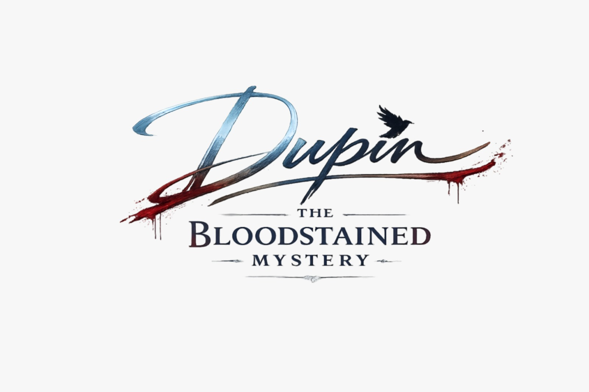

About Me
Chi Sono
Before games I worked in kitchens and restaurants, as a cook and a waiter. It taught me to stay calm when everything lands at once and to take the situation in hand to get through it. People kept telling me I had a leader's temperament, and when I started my game development course my teacher noticed the same thing and pointed me toward producing and project management.
Today I am a Game Producer and QA Lead at Meangrip Game Studios in Naples. I have worked on Bye Sweet Carole (Webby Award winner, Annie Awards nominee, published by Maximum Entertainment), Roots in the Sky - The Hand of Glory 2 and Dupin - The Bloodstained Mystery, plus a mobile narrative game for ANM. My job, in short: solving problems, sometimes in unconventional ways, as long as they work.
Prima dei videogiochi ho lavorato in cucina e in sala, come cuoco e cameriere. Mi ha insegnato a restare lucido quando tutto arriva insieme e a prendere in mano la situazione per uscirne nel modo migliore. Mi è sempre stato detto che avevo un carattere da leader e, quando ho iniziato il corso di sviluppo videoludico, se n'è accorto anche il mio professore, che mi ha indirizzato verso la produzione e il project management.
Oggi sono Game Producer e QA Lead presso Meangrip Game Studios a Napoli. Ho lavorato a Bye Sweet Carole (vincitore di un Webby Award, candidato agli Annie Awards, pubblicato da Maximum Entertainment), Roots in the Sky - The Hand of Glory 2 e Dupin - The Bloodstained Mystery, oltre a un gioco narrativo mobile per ANM. Il mio lavoro, in breve: risolvere problemi, a volte in modo non convenzionale, purché funzioni.
Games I Worked On
Videogiochi su cui ho lavorato

- Managed the development team: tasks assigned per person and tracked toward milestones.
- Gestione del team di sviluppo: task assegnati per singola persona e monitorati verso le milestone.

- Led QA: test plan execution and bug tracking through to release.
- Verified puzzle logic and narrative progression across 50+ locations.
- Took the Switch version through Nintendo Lotcheck: fixed each reported issue and resubmitted until approval.
- Guida del QA: esecuzione dei test plan e bug tracking fino al rilascio.
- Verifica della logica degli enigmi e della progressione narrativa in oltre 50 location.
- Versione Switch portata attraverso il Lotcheck Nintendo: correzione di ogni problema segnalato e nuova submission fino all'approvazione.

- Led QA on the investigation mechanics and crime scene sequences.
- Tested branching dialogue logic and prepared the release build.
- Guida del QA su meccaniche investigative e scene del crimine.
- Test della logica dei dialoghi a scelta e preparazione della build di rilascio.
Awards and sales figures refer to the game as a whole and its development team, as reported publicly.
Premi e dati di vendita si riferiscono al gioco e al suo team di sviluppo nel complesso, come riportato pubblicamente.
Production & QA Stack
Production & QA Stack
Jira, Trello, Notion.
Methodologies:
Agile, Scrum, Milestone Management, Risk Assessment.
Storefronts & Certification:
Nintendo Switch (Lotcheck / TRC), Steamworks, GOG, itch.io, Google Play Console.
Jira, Trello, Notion.
Metodologie:
Agile, Scrum, Milestone Management, Risk Assessment.
Storefront & Certificazione:
Nintendo Switch (Lotcheck / TRC), Steamworks, GOG, itch.io, Google Play Console.
Work Experience
Esperienza Professionale
Junior Producer / Lead Tester
- Bye Sweet Carole (Junior Producer & Lead Tester): multi-platform release on PC, Switch, PS5 and Xbox Series X|S with publisher Maximum Entertainment.
- Roots in the Sky - The Hand of Glory 2 (Lead Tester): QA lead through to the August 2026 release (PC and Switch).
- Dupin - The Bloodstained Mystery (QA Lead & Tester): QA and release for the April 2026 launch.
- ANM & Core (QA Lead & Production Support): mobile narrative adventure for Azienda Napoletana Mobilità, on Google Play and the App Store.
- Bye Sweet Carole (Junior Producer & Lead Tester): rilascio multipiattaforma su PC, Switch, PS5 e Xbox Series X|S con il publisher Maximum Entertainment.
- Roots in the Sky - The Hand of Glory 2 (Lead Tester): guida del QA fino al rilascio di agosto 2026 (PC e Switch).
- Dupin - The Bloodstained Mystery (QA Lead & Tester): QA e rilascio per il lancio di aprile 2026.
- ANM & Core (QA Lead & Production Support): avventura narrativa mobile per l'Azienda Napoletana Mobilità, su Google Play e App Store.